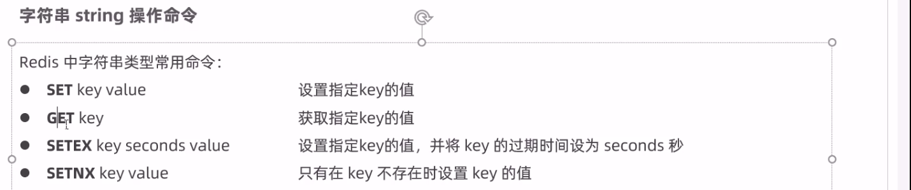
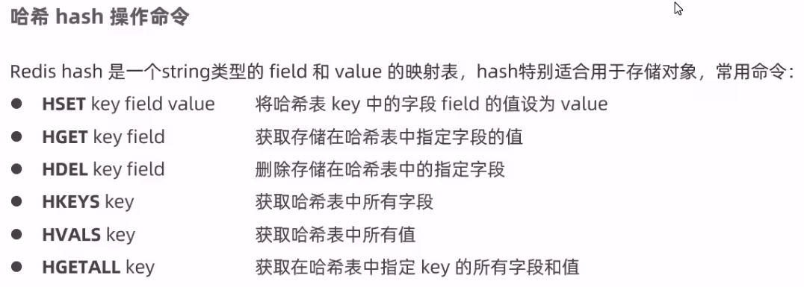
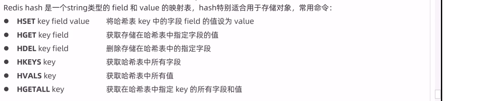
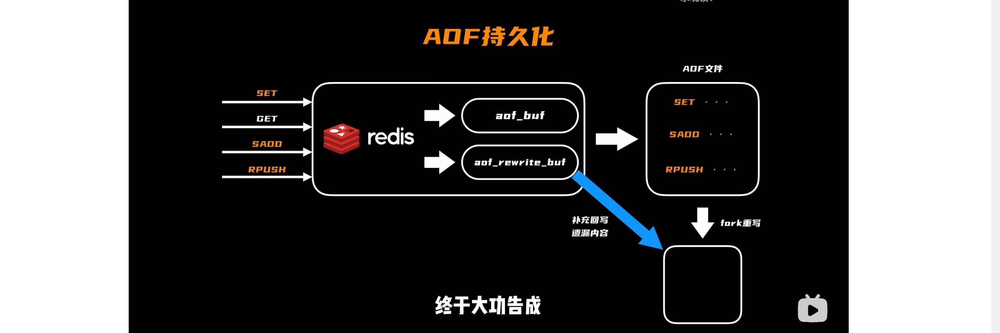
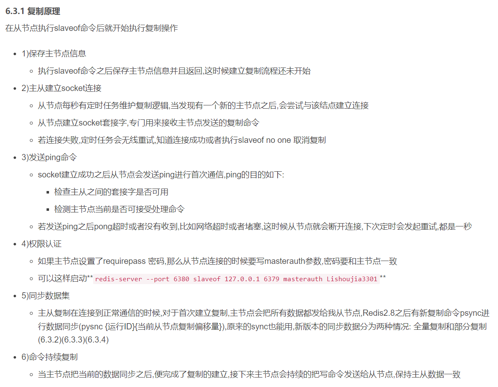
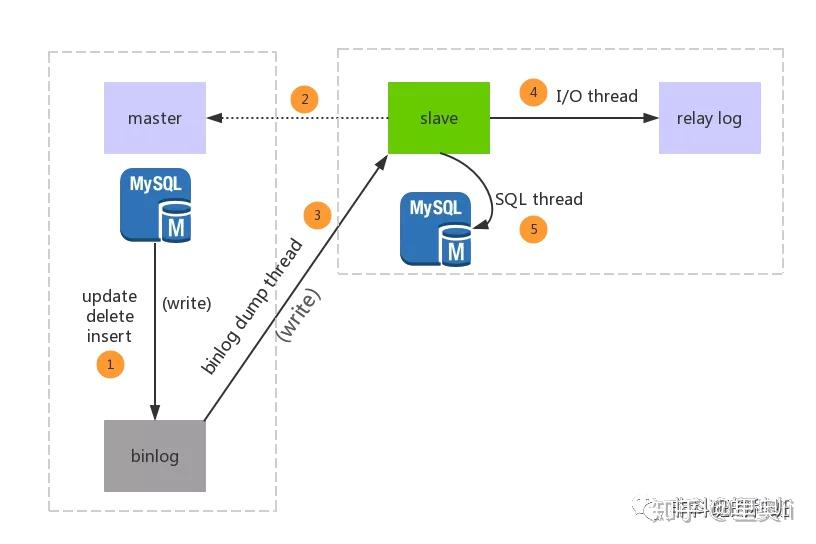
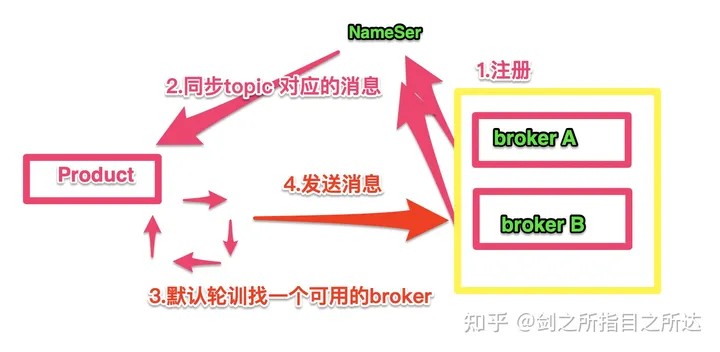
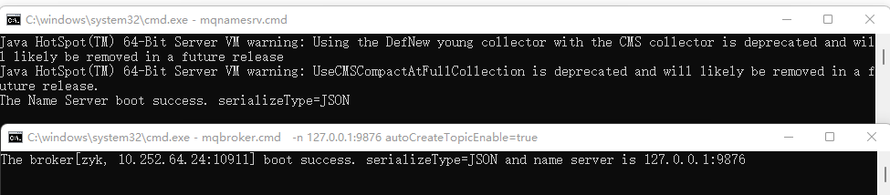
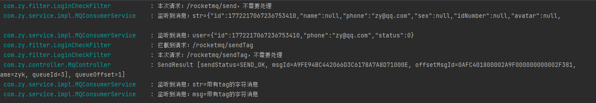
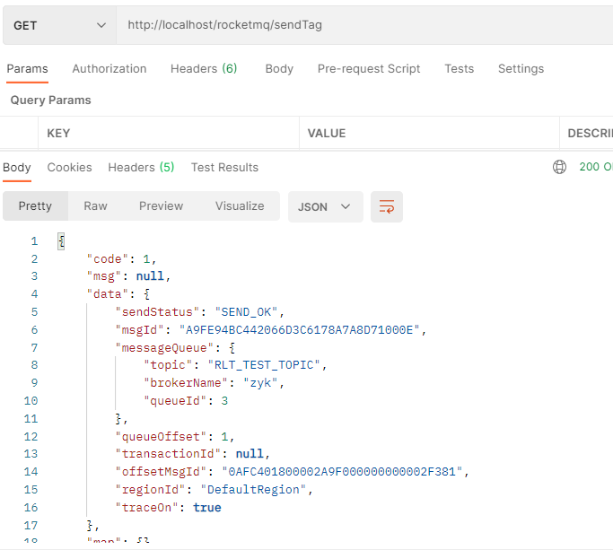

最近的一次 java 项目还是本科，几年了，主从和 Nginx 有用过，虽然也忘了。但肯定不够，要躺板板的。补充学一下 Redis 和 RocketMQ 和复习之前的。
# Redis + SpringCache
# 安装
没啥好说的，双端安装，教程很多，其中 linux 下需要 gcc 环境
# 服务运行
# 启停
- 进入到
/src目录下，执行redis-server即可启动服务，默认端口号为6379
# 进入到根目录 | |
cd /usr/local/redis根目录/src | |
# 执行 redis-server | |
./redis-server |
ps aux | grep redis查看当前进程 PIDkill -9 PID关闭- 或者执行
redis-cli shutdown
有密码则要先登录再 shutdownredis-cli -p <password> shutdown，虽然会提示直接这样用密码不安全哈哈
# 后台运行
- 进入到 redis 根目录下，修改配置 redis.conf 文件
# 进入到 redis 根目录下 | |
cd /usr/local/redis根目录 | |
# 修改配置文件 | |
vim redis.conf |
- 找到
daemonize on字段，将其修改为daemonize yes - 在 redis 根目录以 redis.conf 作为配置文件在后台运行
cd src/redis-server | |
./redis.conf |
- 或者 tmux 开后台终端也好用
# 虚拟环境（免断网掉线，后台运行） {创建、进入、杀死、切换、重命名、显示所有} | |
tmux new -t <name> | |
tmux a -t <name> | |
tmux kill-session -t <session-name> | |
tmux switch -t <session-name> | |
tmux rename-session -t 0 <new-name> | |
tmux ls | |
# 退出 (非终止)，在里面 Ctrl+b 按 d |
# 密码校验
- 还是修改 redis.conf 配置文件，找到
requirepass这行 (vim 里 / 查找内容)，将其注释去掉，并在后面写上自己的密码 - 然后杀掉原进程再重新启动
# 重新启动 | |
src/redis-server ./redis.conf | |
# 登录时同时进行认证 | |
src/redis-cli -h localhost -p 6379 -a <password> |
- 修改完毕之后重启服务
# 远程连接
- 还是修改 redis.conf 配置文件，找到
bind 127.0.0.1这行，把这行注释掉 - 之后设置防火墙，开启 6379 端口
# 开启 6379 端口 | |
firewall-cmd --zone=public --add-port=6379/tcp --permanent | |
# 设置立即生效 | |
firewall-cmd --reload | |
# 查看开放的端口 | |
firewall-cmd --zone=public --list-ports |
- 服务器对应的接口要打开，像阿里云在 esc 控制台要手动添加开放端口
- 最后在 Windows 的 redis 根目录下，按住 Shift + 右键打开 PowerShell 窗口，连接 Linux 的 Redis
.\redis-cli.ext -h 服务器地址 -p 6379 -a <password>
懒得开控制台的话用 redis desktop，使用参考
# 报错
启动的时候遇到了
WARNING overcommit_memory is set to 0! Background save may fail | |
under low memory condition. To fix this issue add ‘vm.overcommit_memory = 1’ to > > > /etc/sysctl.conf and then reboot or run the command ‘sysctl vm.overcommit_memory=1’ > for this to take effect. |
需要进行内存设置（服务器配置太拉的要？）echo 1 > /proc/sys/vm/overcommit_memory 即可
# Java 中使用
- Redis 的 Java 客户端有很多，官方推荐的有三种
JedisLettuceRedisson
- Spring 对 Redis 客户端进行了整合，提供了 SpringDataRedis，在 Spring Boot 项目中还提供了对应的 Starter，即
spring-boot-starter-data-redis
# Jedis
- 使用 Jedis 的步骤
- 获取连接
- 执行操作
- 关闭连接
- 在此之前我们需要导入一下 Jedis 的 maven 坐标
<dependency> | |
<groupId>redis.clients</groupId> | |
<artifactId>jedis</artifactId> | |
<version>2.8.0</version> | |
</dependency> |
- 编写测试类
@SpringBootTest | |
class RedisTestApplicationTests { | |
@Test | |
void contextLoads() { | |
//1. 获取连接 | |
Jedis jedis = new Jedis("localhost", 6379); | |
//2. 执行具体操作 | |
//key、value set 到 redis 中 | |
jedis.set("name", "Hades"); | |
//hashset: 对于某些不定项操作可以利用哈希扩展 | |
jedis.hset("stu", "name", "Jerry"); | |
jedis.hset("stu", "age", "18"); | |
jedis.hset("stu", "num", "4204000400"); | |
Map<String, String> map = jedis.hgetAll("stu"); | |
Set<String> keySet = map.keySet(); | |
for (String key : keySet) { | |
String value = map.get(key); | |
System.out.println(key + ":" + value); | |
} | |
String name = jedis.get("name"); | |
System.out.println(name); | |
//3. 关闭连接 | |
jedis.close(); | |
} | |
} |
另外两个类似，导入坐标，获取链接，使用各自的接口函数
# Spring Data Redis
- SpringBoot 项目中，可以使用 SpringDataRedis 来简化 Redis（常用）
- Spring Data Redis 中提供了一个高度封装的类：RedisTemplate，针对 jedis 客户端中大量 api 进行了归类封装，将同一类型操作封装为 operation 接口，具体分类如下：
- ValueOperations：简单 K-V 操作
- SetOperations：set 类型数据操作
- ZSetOperations：zset 类型数据操作
- HashOperations：针对 map 类型的数据操作
- ListOperations：针对 list 类型的数据操作
- 使用 SpringDataRedis，我们首先需要导入它的 maven 坐标
<!--Spring Boot-redis 的依赖包 --> | |
<dependency> | |
<groupId>org.springframework.boot</groupId> | |
<artifactId>spring-boot-starter-data-redis</artifactId> | |
</dependency> |
- 重新设置一下序列化器，防止出现乱码，在 config 包下创建
RedisConfig配置类
@Configuration | |
public class RedisConfig extends CachingConfigurerSupport { | |
@Bean | |
public RedisTemplate<Object, Object> redisTemplate(RedisConnectionFactory connectionFactory) { | |
RedisTemplate<Object, Object> redisTemplate = new RedisTemplate<>(); | |
// 默认的 Key 序列化器为：JdkSerializationRedisSerializer | |
redisTemplate.setKeySerializer(new StringRedisSerializer()); | |
redisTemplate.setHashKeySerializer(new StringRedisSerializer()); | |
redisTemplate.setConnectionFactory(connectionFactory); | |
return redisTemplate; | |
} | |
}``` | |
>3. 配置一下连接redis的相关配置 | |
```yml | |
spring: | |
redis: | |
host: localhost | |
port: 6379 | |
#password: root | |
database: 0 #操作的是0号数据库 | |
jedis: | |
#Redis连接池配置 | |
pool: | |
max-active: 8 #最大连接数 | |
max-wait: 1ms #连接池最大阻塞等待时间 | |
max-idle: 4 #连接池中的最大空闲连接 | |
min-idle: 0 #连接池中的最小空闲连接 |
- 使用
String类型数据操作
@Test | |
void stringTest() { | |
// 获取对象 | |
ValueOperations valueOperations = redisTemplate.opsForValue(); | |
// 设置 name 为 Hades | |
valueOperations.set("name","Hades"); | |
String name = (String) valueOperations.get("name"); | |
System.out.println(name); | |
// 设置 age 为 9527，有效时间 10 秒 | |
valueOperations.set("age", "9527", 10, TimeUnit.SECONDS); | |
String age = (String) valueOperations.get("age"); | |
System.out.println(age); | |
// 如果不存在，则设置 name 为 Kyle | |
Boolean aBoolean = valueOperations.setIfAbsent("name", "Kyle"); | |
System.out.println(aBoolean); | |
}``` | |
输出结果如下，由于name已经存在，故Kyle设置失败，最后返回false，10秒过后，我们再去redis中get name，则输出`nil`，表示不存在 | |
- `Hash`类型数据操作 | |
```java | |
@Test | |
void hashTest() { | |
HashOperations hashOperations = redisTemplate.opsForHash(); | |
hashOperations.put("4204000400", "name", "Hades"); | |
hashOperations.put("4204000400", "age", "18"); | |
hashOperations.put("4204000400", "hobby", "Apex"); | |
// 获取 map 集合 | |
Map<String, String> map = hashOperations.entries("4204000400"); | |
Set<String> keySet = map.keySet(); | |
for (String hashKey : keySet) { | |
System.out.println(hashKey + ":" + map.get(hashKey)); | |
} | |
System.out.println("$$$$$$$$$$$$$$$"); | |
// 只获取 keys | |
Set<String> keys = hashOperations.keys("4204000400"); | |
for (String key : keys) { | |
System.out.println(key); | |
} | |
System.out.println("$$$$$$$$$$$$$$$"); | |
// 只获取 values | |
List<String> values = hashOperations.values("4204000400"); | |
for (String value : values) { | |
System.out.println(value); | |
} | |
} |
输出结果如下
name:Hades | |
age:18 | |
hobby:Apex | |
$$$$$$$$$$$$$$$ | |
name | |
age | |
hobby | |
$$$$$$$$$$$$$$$ | |
Hades | |
18 | |
Apex |
List类型数据操作
@Test | |
void listTest() { | |
ListOperations listOperations = redisTemplate.opsForList(); | |
// 存数据 | |
listOperations.leftPush("testData", "A"); | |
listOperations.leftPushAll("testData", "B", "C", "D"); | |
List<String> testDatas = listOperations.range("testData", 0, -1); | |
// 遍历 | |
for (String tableData : testDatas) { | |
System.out.print(tableData + " "); | |
} | |
System.out.println(); | |
// 获取当前 list 长度，用于遍历 | |
Long size = listOperations.size("testData"); | |
int value = size.intValue(); | |
// 遍历输出并删除 | |
for (int i = 0; i < value; i++) { | |
System.out.print(listOperations.leftPop("testData") + " "); | |
} | |
// 最后输出一下当前 list 长度 | |
System.out.println(); | |
System.out.println(listOperations.size("testData")); | |
} |
输出结果如下
D C B A | |
D C B A | |
0 |
Set类型数据操作
@Test | |
void setTest() { | |
SetOperations setOperations = redisTemplate.opsForSet(); | |
// 存数据，这里存了两个 a | |
setOperations.add("tmp", "a", "b", "c", "d", "a"); | |
遍历输出 | |
Set<String> tmpData = setOperations.members("tmp"); | |
for (String value : tmpData) { | |
System.out.print(value + " "); | |
} | |
System.out.println(); | |
System.out.println("$$$$$$$$$$$$$$$$$$$"); | |
// 删除 bc | |
setOperations.remove("tmp", "b", "c"); | |
// 再次遍历输出 | |
tmpData = setOperations.members("tmp"); | |
for (String value : tmpData) { | |
System.out.print(value + " "); | |
} | |
} |
输出结果如下，符合预期
d b c a | |
$$$$$$$$$$$$$$$$$$$ | |
d a |
- 通用的数据类型操作
@Test | |
void commonTest() { | |
// 查看所有 key | |
Set<String> keys = redisTemplate.keys("*"); | |
for (String key : keys) { | |
System.out.println(key); | |
} | |
// 查看是否存在指定 key | |
System.out.println("$$$$$$$$$$$$$$$$$$$$$$$$$"); | |
System.out.println(redisTemplate.hasKey("Random")); | |
System.out.println("$$$$$$$$$$$$$$$$$$$$$$$$$"); | |
// 删除指定 key，并再次查看 | |
redisTemplate.delete("myZset"); | |
keys = redisTemplate.keys("*"); | |
for (String key : keys) { | |
System.out.println(key); | |
} | |
System.out.println("$$$$$$$$$$$$$$$$$$$$$$$$$"); | |
// 输出指定 key 的类型 | |
System.out.println(redisTemplate.type("tmp")); | |
} |
tmp | |
name | |
4204000400 | |
stu | |
myData | |
$$$$$$$$$$$$$$$$$$$$$$$$$ | |
false | |
$$$$$$$$$$$$$$$$$$$$$$$$$ | |
tmp | |
name | |
4204000400 | |
stu | |
myData | |
$$$$$$$$$$$$$$$$$$$$$$$$$ | |
SET |
# 简单案例
导入 SpringDataRedis 的 maven 坐标
使用 SpringDataRedis
<dependency> | |
<groupId>org.springframework.boot</groupId> | |
<artifactId>spring-boot-starter-data-redis</artifactId> | |
</dependency> |
配置文件
- 配置连接 redis 的数据，我这里配置的是我的云服务器上装的 Redis
spring: | |
redis: | |
host: localhost # 或者服务器上的 | |
port: 6379 | |
#password: root | |
database: 0 #操作的是 0 号数据库 | |
jedis: | |
#Redis 连接池配置 | |
pool: | |
max-active: 8 #最大连接数 | |
max-wait: 1ms #连接池最大阻塞等待时间 | |
max-idle: 4 #连接池中的最大空闲连接 | |
min-idle: 0 #连接池中的最小空闲连接 |
配置类
- 配置一下序列化器，方便我们在图形化界面中查看我们存入的数据，在 config 包下新建 RedisConfig 类
- 但是也可以不配置 RedisConfig，而是直接用
SpringRedisConfig，它的默认序列化器就是StringRedisSerializer
@Configuration | |
public class RedisConfig extends CachingConfigurerSupport { | |
@Bean | |
public RedisTemplate<Object, Object> redisTemplate(RedisConnectionFactory connectionFactory) { | |
RedisTemplate<Object, Object> redisTemplate = new RedisTemplate<>(); | |
// 默认 key 序列化器为：JdkSerializationRedisSerializer | |
redisTemplate.setKeySerializer(new StringRedisSerializer()); | |
redisTemplate.setConnectionFactory(connectionFactory); | |
return redisTemplate; | |
} | |
} |
测试
在测试类中测试，再次读取时有持久化的对象。但用 redis desktop 修改的数据无法反序列化回来，爷晕晕
package com.zy; | |
import org.junit.jupiter.api.Test; | |
import org.springframework.beans.factory.annotation.Autowired; | |
import org.springframework.boot.test.context.SpringBootTest; | |
import org.springframework.data.redis.core.RedisTemplate; | |
import org.springframework.data.redis.core.ValueOperations; | |
import org.springframework.data.redis.serializer.GenericJackson2JsonRedisSerializer; | |
import org.springframework.data.redis.serializer.RedisSerializer; | |
import org.springframework.data.redis.serializer.StringRedisSerializer; | |
import java.util.concurrent.TimeUnit; | |
@SpringBootTest | |
class TestApplicationTests { | |
@Autowired | |
private RedisTemplate redisTemplate; | |
@Test | |
void stringTest() { | |
// 获取对象 | |
ValueOperations valueOperations = redisTemplate.opsForValue(); | |
// 设置 name 为 Hades | |
valueOperations.set("name","ZYK"); | |
String name = (String) valueOperations.get("name"); | |
System.out.println(name); | |
// 设置 age 为 9527，有效时间 10 秒 | |
valueOperations.set("age", "9527", 10, TimeUnit.SECONDS); | |
String age = (String) valueOperations.get("age"); | |
System.out.println(age); | |
// 如果不存在，则设置 name 为 Kyle | |
Boolean aBoolean = valueOperations.setIfAbsent("name", "111"); | |
System.out.println(aBoolean); | |
// 注释掉上面除 valueOperations，再次测试读取数据 | |
System.out.println((String)valueOperations.get("name")); | |
} | |
} |
开发中能做什么呢？
- 缓存短信
- 替换掉 session，避免服务器的开销，因为还要存用户 id 之类的
- 缓存商品信息
- 比如用户的购物车里的，或者历史订单，这种显示固定内容的，避免反复查询
- 但要注意在其他 update、save、delete 等业务逻辑时要删除对应的 redis 数据，让其在执行查询业务的时候重新加载
- 能放图片吗？
- 能，基于 base64 编解码
- "字符串类型是 Redis 中最基本的数据类型，它能存储任何形式的字符串，包括二进制数据。你可以用其存储用户的邮箱、JSON 化的对象甚至是一张图片"
# 结合 spring cache
- SpringCache 是一个框架，实现了基本注解的缓存功能，只需要简单的添加一个注解，就能实现缓存功能
- SpringCache 提供了一层抽象，底层可以切换不同的 cache 实现，具体就是通过 CacheManager 接口来统一不同的缓存技术
- 针对不同的缓存技术，需要实现不同的 CacheManager
| CacheManger | 描述 |
|---|---|
| EhCacheCacheManager | 使用 EhCache 作为缓存技术 |
| GuavaCacheManager | 使用 Googke 的 GuavaCache 作为缓存技术 |
| RedisCacheManager | 使用 Redis 作为缓存技术 |
# 常用注解
| 注解 | 说明 |
|---|---|
| @EnableCaching | 开启缓存注解功能 |
| @Cacheable | 在方法执行前 spring 先查看缓存中是否有数据。如果有数据，则直接返回缓存数据；若没有数据，调用方法并将方法返回值放到缓存中 |
| @CachePut | 将方法的返回值放到缓存中 |
| @CacheEvict | 将一条或者多条数据从缓存中删除 |
@Cacheable 的作用主要针对方法配置，能够根据方法的请求参数对其结果进行缓存，其主要参数说明如下
| 注解 | 说明 <img width=300/> | 举例 |
|---|---|---|
| value | 缓存的名称，在 spring 配置文件中定义，必须指定至少一个 | 例如:@Cacheable (value=“mycache”) 或者 @Cacheable (value=(“cache7”, “cache2”] |
| key | 缓存的 key，可以为空，如果指定要按照 SpEL 表达式编写，如果不指定，则缺省按照方法的所有参数进行组合 | 例如:@Cacheable (value=“testcache”,key=“#userName”) |
| condition | 缓存的条件，可以为空，使用 SpEL 编写，返回 true 或者 false，只有为 true 才进行缓存 | 例如:@Cacheable (value=“testcache”,condition=“#userName.length ()>2”) |
@CachEvict 的作用主要针对方法配置，能够根据一定的条件对缓存进行清空
| 注解 | 说明 <img width=300/> | 举例 |
|---|---|---|
| value | 缓存的名称，在 spring 配置文件中定义，必须指定至少一个 | 例如:@Cacheable (value=“mycache”) 或者 @Cacheable (value={“cache1”, “cache2”] |
| key | 缓存的 key，可以为空，如果指定要按照 SpEL 表达式编写，如果不指定，则缺省按照方法的所有参数进行组合 | 例如:@Cacheable (value=“testcache”,key=“#userName”) |
| condition | 缓存的条件，可以为空，使用 SpEL 编写，返回 true 或者 false，只有为 true 才进行缓存 | 例如:@Cacheable (value=“testcache”,condition=“#userName.length ()>2”) |
| allEntries | 是否清空所有缓存内容，缺省为 false，如果指定为 true，则方法调用后将立即清空所有缓存 | 例如:@CachEvict (value=“testcache”,allEntries=true) |
| beforelnvocation | 是否在方法执行前就清空，缺省为 false，如果指定为 true，则在方法还没有执行的时候就清空缓存，缺省情况下，如果方法执行抛出异常，则不会清空缓存 | 例如:@CachEvict (value=“testcache”, beforelnvocation=true) |
# 使用
导入坐标
<dependency> | |
<groupId>org.springframework.boot</groupId> | |
<artifactId>spring-boot-starter-data-redis</artifactId> | |
</dependency> | |
<dependency> | |
<groupId>org.springframework.boot</groupId> | |
<artifactId>spring-boot-starter-cache</artifactId> | |
</dependency> |
配置 application.yml
spring: | |
redis: | |
host: 101.XXX.XXX.160 # 本地 localhost 或者 开启了 redis 的服务器的 ip | |
password: # redis 服务设置的密码，不是服务器密码噢 | |
port: 6379 | |
database: 0 | |
cache: | |
redis: | |
time-to-live: 3600000 #设置存活时间为一小时，如果不设置，则一直存活 |
application 添加
@EnableCaching注解
@Slf4j | |
@SpringBootApplication | |
@ServletComponentScan | |
@EnableTransactionManagement | |
@EnableCaching // 开启缓存注解功能 | |
public class ReggieApplication { | |
public static void main(String[] args) throws Exception { | |
SpringApplication.run(ReggieApplication.class,args); | |
log.info("项目 启动!"); | |
} | |
} |
方法处（多为处理查询请求）添加相应的注解
@Cacheale ，功能是：
- 在方法执行前，Spring 先查看缓存中是否有数据；如果有数据，则直接返回缓存数据；若没有数据，调用方法并将方法返回值放到缓存中
@GetMapping("/list") | |
@Cacheable(value = "setmealCache", key = "#setmeal.categoryId + '_' + #setmeal.status") | |
public Result<List<Setmeal>> list(Setmeal setmeal) { | |
// 条件构造器 | |
LambdaQueryWrapper<Setmeal> queryWrapper = new LambdaQueryWrapper<>(); | |
// 添加条件 | |
queryWrapper.eq(setmeal.getCategoryId() != null, Setmeal::getCategoryId, setmeal.getCategoryId()); | |
queryWrapper.eq(setmeal.getStatus() != null, Setmeal::getStatus, 1); | |
// 排序 | |
queryWrapper.orderByDesc(Setmeal::getUpdateTime); | |
List<Setmeal> setmealList = setmealService.list(queryWrapper); | |
return Result.success(setmealList); | |
} |
@CacheEvict 该注解的功能是：
- 将一条或者多条数据从缓存中删除
@PostMapping | |
// 设置 allEntries 为 true，清空缓存名称为 setmealCache 的所有缓存 | |
@CacheEvict(value = "setmealCache", allEntries = true) | |
public Result<String> save(@RequestBody SetmealDto setmealDto) { | |
log.info("套餐信息：{}", setmealDto); | |
setmealService.saveWithDish(setmealDto); | |
return Result.success("套餐添加成功"); | |
} |
# redis 原理
Redis 的 Java 客户端很多，官方推荐的有三种：Jedis、Lettuce、Redisson。Spring 对 Redis 客户端进行了整合，提供了 Spring Data Redis，在 Spring Boot 项目中还提供了对应的 Starter，即 spring-boot-starter-data-redis
响应快速、 操作都是原子的，满足需要高并发、锁等业务。key 就是 string，value 支持 6 种数据类型：字符串 string、哈希 hash、列表 list（任务队列）、集合 set、可排序集合和基数
# 查看所有键值命令 | |
keys * | |
# vim 里面查找，i 插入，n 跳转到下一个，：wq 保存并退出，u 撤销一次修改，ps -ef 打印进程 | grep 查找 redis | |
/内容 | |
-----------------------------------------------------------------linux | |
# 开启 | |
./redis-service | |
# 连接 | |
./redis-cli | |
# 退出 | |
redis-cli -h 你的IP地址 -p 你的redis端口号 -a 密码 shutdown，就可以退出了 | |
----------------------------------------------------------------windows | |
# 直接双击对应的服务 / 客户端就行 | |
# 默认没有密码校验、配置里可以选择 requispass |
# 操作
nil 相当于 null

hash


spring Data Redis 中提供了一个高度封装的类：RedisTemplate，针对 iedis 客户端中大量 api 进行了归类封装，将同一类型操作封装为 operation 接口，具体分类如下:
- ValueOperations: 简单 K-V 操作
- SetOperations: set 类型数据操作
- ZSetOperations: zset 类型数据操作
- HashOperations: 针对 map 类型的数据操作
- ListOperations: 针对 list 类型的数据操作
# 原理
缓存管理、持久化、哨兵和高可用、集群工作
持久化方案
主节点不但负责数据读写，还负责把写命令同步给从节点。写命令发送过程是异步完成，主节点自身处理完写命令后直接返回给客户端，并不等待从节点复制完成
RDB 模式：redis 中的 set 操作，在规定的周期内执行了指定的次数时，redis 会自动的将内存中的数据持久化到硬盘中。并且后缀名为.rdb。
- 优点：使用单独子进程来进行持久化，主进程不会进行任何 IO 操作，保证了 redis 的高性能
- 缺点: RDB 是间隔一段时间进行持久化，如果持久化之间 redis 发生故障，会发生数据丢失。所以这种方式更适合数据要求不严谨的时候
AOF 模式：Append-only file，将 “操作 + 数据” 以格式化指令的方式追加到操作日志文件的尾部，在 append 操作返回后 (已经写入到文件或者即将写入)，才进行实际的数据变更，“日志文件” 保存了历史所有的操作过程

集群分配，hash 映射，按性能分配映射多少，然后由主从保障不会掉线

# 更新策略
内存淘汰策略
Redis 是一个基于内存的缓存系统，当内存空间不足时，就需要对一部分缓存数据进行淘汰，以释放内存空间给新的数据使用。Redis 提供了多种内存淘汰策略，如 LRU（最近最少使用）、LFU（最不常用）等。这些策略根据数据的访问频率或最近的使用时间决定哪些数据会被优先淘汰。例如，LRU 策略会优先淘汰最近很少使用的数据，以保留最常用的数据。超时剔除策略
Redis 提供了设置缓存数据的过期时间，当缓存数据过期时，Redis 会自动将其删除。这种策略可以根据数据的有效期来进行缓存更新，当数据过期后，下一次访问时会触发缓存更新的逻辑，并从数据源中重新获取最新的数据。通过设置合适的过期时间，可以兼顾缓存的实时性和数据源的压力，但一旦数据过期，客户端可能会面临较长的等待时间。主动更新策略
主动更新策略通过应用程序主动触发更新缓存的操作。这种策略通常在数据源发生变化时进行，如数据库更新、消息队列的消息到达等。应用程序接收到数据变更的事件后，可以先更新数据源，然后再强制更新缓存，以使得缓存和数据源保持一致。这种策略可以实现缓存的即时性，但需要合理地触发更新操作，以免频繁地更新缓存导致系统性能下降。
总的来说：在实际应用场景中，可以根据业务需求和性能要求选择合适的缓存更新策略。内存淘汰策略适用于内存紧张的情况，超时剔除策略适用于对实时性要求较低的场景，主动更新策略适用于需要保持缓存数据和数据源一致性的场景。根据具体情况综合使用这些策略，可以优化系统性能、提高数据的访问效率。
- 删除缓存还是更新缓存？
- 更新缓存：每次更新数据库都更新缓存，无效写操作较多
- 删除缓存：更新数据库时让缓存失效，查询时再更新缓存
假设我们每次操作数据库后，都操作缓存，但是中间如果没有人查询，那么这个更新动作实际上只有最后一次生效，中间的更新动作意义并不大，我们可以把缓存删除，等待再次查询时，将缓存中的数据加载出来
- 如何保证缓存与数据库的操作的同时成功或失败？
- 单体系统，将缓存与数据库操作放在一个事务
- 分布式系统，利用 TCC 等分布式事务方案
- 先操作缓存还是先操作数据库？
我们应当是先操作数据库，再删除缓存，原因在于，如果你选择先删除缓存，再操作数据库，在两个线程并发来访问时，假设线程 1 先来，他先把缓存删了，此时线程 2 过来，他查询缓存数据并不存在，此时他写入缓存，当他写入缓存后，线程 1 再执行更新动作时，实际上写入的就是旧的数据，新的数据被旧数据覆盖了。
# 淘汰
如果我们设置一批 key 只能存活 1 小时，那么 1 小时之后，redis 是怎么对这批数据进行删除的？
答案：定期删数 + 惰性删除
定期删除
指的是 redis 默认是每隔 100ms 就随机抽取一些设置了过期时间的 key，检查其是否过期，如果过期就删除。注意，这里可不是每隔 100ms 就遍历所有的设置过期时间的 key，那样就是一场性能上的灾难。实际上 redis 是每隔 100ms 随机抽取一些 key 来检查和删除的。惰性删除
定期删除的问题是可能会导致很多过期 key 到了时间并没有被删除掉，那怎么办？所以还有惰性删除，也就是在查询某个 key 的时候，redis 会检查一下这个 key 如果设置了过期时间并且是否过期了，如果过期了就会在此时删除。
通过定期删除和惰性删除两种方式结合，保证过期的 key 一定会被删除
- 定期删除是为了节省内存
- 惰性删除是为了保证过期性
如果定期没删除，也没有查询，这样会导致大量过期的 key 堆积在内存里怎么办？
答案：内存淘汰机制
- allkeys-lru：当内存不足以容纳新写入数据时，在键空间中，移除最近最少使用的 key。
- volatile-lru：当内存不足以容纳新写入数据时，在设置了过期时间的键空间中，移除最近最少使用的 key。
上面都是基于 LRU 算法：Least Recently Used，即最近最少使用，是一种常用的页面置换算法，选择最近最久未使用的页面予以淘汰。该算法赋予每个页面一个访问字段，用来记录一个页面自上次被访问以来所经历的时间 t，当须淘汰一个页面时，选择现有页面中其 t 值最大的，即最近最少使用的页面予以淘汰。
还有随机和 LFU（least frequently used (LFU) page-replacement algorithm）。即最不经常使用页置换算法，要求在页置换时置换引用计数最小的页，因为经常使用的页应该有一个较大的引用次数。但是有些页在开始时使用次数很多，但以后就不再使用，这类页将会长时间留在内存中，因此可以将引用计数寄存器定时右移一位，形成指数衰减的平均使用次数。
# QA
为什么 redis cluster 至少需要 3 个主节点？
因为故障检测时没有哨兵，需要超过半数的主节点都主观下线，该故障节点才会被视为客观下线。两个主节点，如果挂了一个，那么只剩一个无法达到超过半数的条件。这与哨兵模式不同，因为两个哨兵不一定会挂。
复制数据延迟
会有个延迟监听的外部监控程序
- 监控程序会定期检查主从结点的复制偏移量 (6.3.6 的 info replication 那个图的两个值), 差值就是主从结点延迟的字节量
- 当延迟字节量过高的时候，比如说超过 10MB, 监控程序就会出发报警通知客户端从节点延迟过高。可以采用 Zookeeper 的监听机制实现客户端通知
- 客户端收到从节点延迟过高的通知之后，修改读命令路径到主节点或者其他从节点身上，当延迟恢复之后，再次通知客户端恢复从节点的读命令
# MySQL 主从复制
MySQL 主从复制是一个异步的复制过程，底层是基于 Mysql 数据库自带的二进制日志功能。就是一台或多台 NysQL 数据库（slave，即从库）从另一台 MySQL 数据库 (master，即主库）进行日志的复制然后再解析日志并应用到自身，最终实现从库的数据和主库的数据保持一致。MySQL 主从复制是 MySQL 数据库自带功能，无需借助第三方工具。
MySQL 复制过程分成三步:
master将改变记录到二进制日志 (binary log)slave将master的binary log拷贝到它的中继日志 (relay log)slave重做中继日志中的事件，将改变应用到自己的数据库中

更细的说应该是三个线程： master（binlog dump thread）、slave（I/O thread 、SQL thread） ，Master 一条线程和 Slave 中的两条线程。
master（binlog dump thread）主要负责 Master 库中有数据更新的时候，会按照binlog格式，将更新的事件类型写入到主库的binlog文件中。- 并且，Master 会创建
log dump线程通知 Slave 主库中存在数据更新，这就是为什么主库的 binlog 日志一定要开启的原因。 I/O thread线程在 Slave 中创建，该线程用于请求 Master，Master 会返回 binlog 的名称以及当前数据更新的位置、binlog 文件位置的副本。- 然后，将
binlog保存在 「relay log（中继日志）」 中，中继日志也是记录数据更新的信息。 - SQL 线程也是在 Slave 中创建的，当 Slave 检测到中继日志有更新，就会将更新的内容同步到 Slave 数据库中，这样就保证了主从的数据的同步。
# 配置
# 主库
在配置文件 /etc/my.cnf 中
- 找到
[mysqld]，在下面插入两行
log_bin=mysql-bin #[必须] 启用二进制日志
server-id=1 #[必须] 服务器唯一 ID, 只需要确保其 id 是唯一的就好
binlog-do-db=sjk1_sjk2_sjk3 # 设置要复制的库，多个库用_连接
- 重启服务
systemctl restart mysqld - 连接数据库，执行
grant replication slave on *.* to 'zy'@'%' identified by '123456';- 上面的 SQL 的作用是创建一个用户
zy, 密码为123456，并且给zy用户授予replication slave权限，用于建立复制时所需要用到的用户权限，也就是slave必须被master授权具有该权限的用户，才能通过该用户复制，这是因为主库和从库之间需要互相通信，处于安全考虑，只有通过验证的从库才能从主库中读取二进制数据
- 上面的 SQL 的作用是创建一个用户
show master status;打印状态，主要是 File 和 Position 的值
+------------------+----------+--------------+------------------+-------------------+ | |
| File | Position | Binlog_Do_DB | Binlog_Ignore_DB | Executed_Gtid_Set | | |
+------------------+----------+--------------+------------------+-------------------+ | |
| mysql-bin.000005 | 154 | | | | | |
+------------------+----------+--------------+------------------+-------------------+ |
# 从库
- 同样的在配置文件插入 id，
server-id=2，与主库不同 - 重启后连接 MySQL 控制台
change master to master_host='ip',master_user='zy',master_password='123456',master_log_file='mysql-bin.000005',master_log_pos=154; # 配置
sstart slave; # 开启
```
- 查询从库状态
show slave status;，这 2 个选项对应则成功
Slave_IO_Running: Yes | |
Slave_SQL_Running: Yes |
# 结合 Sharding-JDBC
- Sharding-JDBC 定位为轻量级的 JAVA 框架，在 JAVA 的 JDBC 层提供额外的服务，它使得客户端直连数据库，以 jar 包形式提供服务，无需额外部署和依赖，可理解为增强版的 JDBC 驱动，完全兼容 JDBC 和各种 ORM 框架
- 使用 Sharding-JDBC 可以在程序中轻松的实现数据库读写分离
- 适用于任何基于 JDBC 的 ORM 框架
- 支持任何第三方的数据库连接池
- 支持任意实现 JDBC 规范的数据库
- 使用 Sharding-JDBC 框架的步骤
- 导入对应的 maven 坐标
- 在配置文件中配置读写分离规则
- 在配置文件中配置允许 bean 定义覆盖配置项
<dependency> | |
<groupId>org.apache.shardingsphere</groupId> | |
<artifactId>sharding-jdbc-spring-boot-starter</artifactId> | |
<version>4.0.0-RC1</version> | |
</dependency> |
spring: | |
shardingsphere: | |
datasource: | |
names: | |
master,slave | |
master: | |
type: com.alibaba.druid.pool.DruidDataSource | |
driver-class-name: com.mysql.cj.jdbc.Driver | |
url: jdbc:mysql://localhost:3306/springboot_work | |
username: root | |
password: 123456 | |
slave: | |
type: com.alibaba.druid.pool.DruidDataSource | |
driver-class-name: com.mysql.cj.jdbc.Driver | |
url: jdbc:mysql://47.115.211.251:3306/test | |
username: root | |
password: 123456 | |
masterslave: | |
## 读写分离配置 | |
load-balance-algorithm-type: round_robin | |
## 最终的数据源名称 | |
name: dataSource | |
## 主库数据源名称 | |
master-data-source-name: master | |
## 从库数据源名称列表，多个逗号分隔 | |
slave-data-source-names: slave | |
props: | |
sql: | |
show: true #开启 SQL 显示，默认 false | |
main: | |
allow-bean-definition-overriding: true |
# Njinx
Nginx 是一款轻量级的 web 服务器 / 反向代理服务器及电子邮件 (IMAP/POP3) 代理服务器。其特点是占有内存少，并发能力强，事实上 nginx 的并发能力在同类型的网页服务器中表现较好，中国大陆使用 nginx 的网站有：百度、京东、新浪、网易、腾讯、淘宝等。
下载安装类似 redis，下载、解压，然后 make
# 目录结构
- 重点目录 / 文件:
- conf/nginx.conf
- nginx 配置文件
- html
- 存放静态文件 (html、css、Js 等)
- logs
- 日志目录，存放日志文件
- sbin/nginx
- 二进制文件，用于启动、停止 Nginx 服务
- conf/nginx.conf
- 文件目录树状图如下
. | |
├── conf <-- Nginx配置 | |
│ ├── fastcgi.conf | |
│ ├── fastcgi.conf.default | |
│ ├── fastcgi_params | |
│ ├── fastcgi_params.default | |
│ ├── koi-utf | |
│ ├── koi-win | |
│ ├── mime.types | |
│ ├── mime.types.default | |
│ ├── nginx.conf <-- 主要的配置文件 | |
│ ├── nginx.conf.default | |
│ ├── scgi_params | |
│ ├── scgi_params.default | |
│ ├── uwsgi_params | |
│ ├── uwsgi_params.default | |
│ └── win-utf | |
├── html <-- 存放静态文件，部署项目就要将静态文件放在这 | |
│ ├── 50x.html | |
│ └── index.html <-- 提供的默认的页面 | |
├── logs <-- 日志目录，新装的Nginx，所以还没有日志文件 | |
└── sbin | |
└── nginx <-- 这个文件也经常操作 |
# nginx.conf
- Nginx 配置文件 (conf/nginx.conf) 整体分为三部分
- 全局块 和 Nginx 运行相关的全局配置
- events 块 和网络连接相关的配置
- http 块 代理、缓存、日志记录、虚拟主机配置
- http 全局块
- Server 块
- Server 全局块
- location 块
# 工作进程的数量 | |
worker_processes 1; | |
events { | |
worker_connections 1024; # 每个工作进程连接数 | |
} | |
http { | |
include mime.types; | |
default_type application/octet-stream; | |
# 日志格式 | |
log_format access '$remote_addr - $remote_user [$time_local] $host "$request" ' | |
'$status $body_bytes_sent "$http_referer" ' | |
'"$http_user_agent" "$http_x_forwarded_for" "$clientip"'; | |
access_log /srv/log/nginx/access.log access; # 日志输出目录 | |
gzip on; | |
sendfile on; | |
# 链接超时时间，自动断开 | |
keepalive_timeout 60; | |
# 虚拟主机 | |
server { | |
listen 8080; | |
server_name localhost; # 浏览器访问域名 | |
charset utf-8; | |
access_log logs/localhost.access.log access; | |
# 路由 | |
location / { | |
root www; # 访问根目录 | |
index index.html index.htm; # 入口文件 | |
} | |
} | |
# 引入其他的配置文件 | |
include servers/*; | |
} | |
复制代码 |
# Nginx 命令
查看版本
- 进入 sbin 目录，输入
./nginx -v
- 进入 sbin 目录，输入
检查配置文件正确性
- 进入 sbin 目录，输入
./nginx -t，如果有错误会报错，而且也会记日志
- 进入 sbin 目录，输入
nginx: the configuration file /usr/local/nginx/conf/nginx.conf syntax is ok <brnginx: configuration file /usr/local/nginx/conf/nginx.conf test is successful |
启动和停止
- 进入 sbin 目录，输入
./nginx，启动完成后查看进程 - 如果想停止 Nginx 服务，输入
./nginx -s stop，停止服务后再次 ps aux | grep nginx查看进程
- 进入 sbin 目录，输入
重新加载配置文件
- 当修改 Nginx 配置文件后，需要重新加载才能生效，可以使用下面命令重新加载配置文件：
./nginx -s reload。
- 当修改 Nginx 配置文件后，需要重新加载才能生效，可以使用下面命令重新加载配置文件：
上面的所有命令，都需要我们在 sbin 目录下才能运行，比较麻烦，所以我们可以将 Nginx 的二进制文件配置到环境变量中，这样无论我们在哪个目录下，都能使用上面的命令
- 使用
vim /etc/profile命令打开配置文件，添加后保存并退出
# PATH=$JAVA_HOME/bin:$PATHPATH=/usr/local/nginx/sbin:$JAVA_HOME/bin:$PATH
- 之后重新加载系统配置文件，使用
source /etc/profile命令，然后我们在任意位置输入nginx即可启动服务，nginx -s stop即可停止服务
- 使用
查看自己 IP，启动服务后，浏览器输入 ip 地址就可以访问 Nginx 的默认页面
ip addr
# 资源代理
静态资源复制到 njinx/html/ 下，在 nginx.conf 的 http {...}/https 中
server {
listen 82; # 监听端口
server_name ip1; # 服务器名称
# 路由
location / {
root www; # 访问根目录
index index.html index.htm; # 入口文件
proxy_pass http://ip2 # 要代理的
}
}
也就是访问 ip1 的 82，实际访问到了 ip2
也可以针对不同的资源 192.168.17.129:9001/edu/ 和 192.168.17.129:9001/vod/ 下的资源被分别代理到了 http://127.0.0.1:8080 和 http://127.0.0.1:8081
server {
listen 9001;
server_name 192.168.17.129;
location ~ /edu/ {
proxy_pass http://127.0.0.1:8080
}
location ~ /vod/ {
proxy_pass http://127.0.0.1:8081
}
}
# 负载均衡
即是多个被代理的放在 upstream name {} 中。 sever 的 proxy_pass 是前面的 name
upstream targetServer{
server 192.168.238.132;
server 101.XXX.XXX.160;
}
server {
listen 82;
server_name localhost;
location / {
proxy_pass http://targetServer;
}
}
此时默认轮询。加权，ip 哈希，热备份示意：
upstream mysvr {
server 127.0.0.1:7878 weight=1;
server 192.168.10.121:3333 weight=2;
}
upstream mysvr {
server 127.0.0.1:7878;
server 192.168.10.121:3333;
ip_hash;
}
upstream mysvr {
server 127.0.0.1:7878;
server 192.168.10.121:3333 backup; #热备
}
还有其他策略和配置，见官方文档
# 秒杀问题（redis 缓存、锁、mq）
可以涉及到这些
# 后端设计
对于使用优惠劵秒杀下单，或者说下单逻辑本应如此，那就是先修改数据库，再生成订单，并且绑定成事务执行。
也就是这套逻辑需要写在一起
@Override | |
@Transactional | |
public Result seckillVoucher(Long voucherId) { | |
/** | |
* 秒杀基本实现一： | |
* 1.查询优惠卷 | |
* 2.判断秒杀是否开始 | |
* 3.判断是否结束 | |
* 4.判断库存是否充足 | |
* 5.扣减库存 | |
* 6.创建订单 | |
*/ | |
SeckillVoucher voucher = seckillVoucherService.getById(voucherId); | |
if (voucher.getBeginTime().isAfter(LocalDateTime.now())) { | |
// 尚未开始 | |
return Result.fail("秒杀尚未开始!"); | |
} | |
if (voucher.getEndTime().isBefore(LocalDateTime.now())) { | |
return Result.fail("秒杀已经结束!"); | |
} | |
if (voucher.getStock() < 1) { | |
return Result.fail("库存不足！"); | |
} | |
boolean success = seckillVoucherService.update() | |
.setSql("stock = stock - 1") | |
.eq("voucher_id", voucherId).update(); | |
if (!success) { | |
return Result.fail("库存不足！"); | |
} | |
VoucherOrder voucherOrder = new VoucherOrder(); | |
long orderId = redisIdWorker.nextId("order"); | |
voucherOrder.setId(orderId); | |
Long userId = UserHolder.getUser().getId(); | |
voucherOrder.setUserId(userId); | |
voucherOrder.setVoucherId(voucherId); | |
save(voucherOrder); | |
return Result.ok(orderId); | |
} |
# 超卖问题
当多线程没实现数据安全的时候就会
# redis 缓存
redisson?https://blog.csdn.net/weixin_51596697/article/details/123550748
在系统初始化时，将商品的库存数量加载到 Redis 缓存中；
接收到秒杀请求时，在 Redis 中进行预减库存，当 Redis 中的库存不足时，直接返回秒杀失败，否则继续进行第 3 步
if(redisClient.incrby(productId, -1)<0) {return 0;}redis 的 incrby 是原子操作- 但高并发场景中，有多个请求同时扣减库存，大多数请求的 incrby 操作之后，结果都会小于 0。出现负数，不会超卖，但负值太大的话，万一要回退库存时，就会导致库存不准。
将请求放入异步队列中，返回正在排队中；
服务端异步队列将请求出队，出队成功的请求可以生成秒杀订单，减少数据库库存，返回秒杀订单详情。
当后台订单创建成功之后可以通过 websocket 向用户发送一个秒杀成功通知。前端以此来判断是否秒杀成功，秒杀成功则进入秒杀订单详情，否则秒杀失败。
初始缓存包含：商品 id、商品名称、规格属性、库存等信息，同时数据库中也要有相关信息，毕竟缓存并不完全可靠。

- 然而可能存在缓存击穿的问题，高并发压力依旧给到了数据库就寄了。这就需要加锁，最好使用分布式锁。

当然，针对这种情况，最好在项目启动之前，先把缓存进行预热。即事先把所有的商品，同步到缓存中，这样商品基本都能直接从缓存中获取到，就不会出现缓存击穿的问题了。

是不是上面加锁这一步可以不需要了？
表面上看起来，确实可以不需要。但如果缓存中设置的过期时间不对，缓存提前过期了，或者缓存被不小心删除了，如果不加速同样可能出现缓存击穿。
其实这里加锁，相当于买了一份保险。
- 如果有大量的请求传入的商品 id，在缓存中和数据库中都不存在，这些请求不就每次都会穿透过缓存，而直接访问数据库了，也就是缓存穿透
可以选择过滤器（id 是否在数据库而 放行），但又会有过滤器同步问题。另一个取巧就是不存在的商品 id 访问时也缓存一个不存在缓存，下次在遇到就直接拒绝
上面回退问题可以用 lua 脚本，是能够保证原子性的，它跟 redis 一起配合使用，能够完美解决上面的问题。有段非常经典的代码：
StringBuilder lua = new StringBuilder(); | |
lua.append("if (redis.call('exists', KEYS[1]) == 1) then"); | |
lua.append(" local stock = tonumber(redis.call('get', KEYS[1]));"); | |
lua.append(" if (stock == -1) then"); | |
lua.append(" return 1;"); | |
lua.append(" end;"); | |
lua.append(" if (stock > 0) then"); | |
lua.append(" redis.call('incrby', KEYS[1], -1);"); | |
lua.append(" return stock;"); | |
lua.append(" end;"); | |
lua.append(" return 0;"); | |
lua.append("end;"); | |
lua.append("return -1;"); |
- 先判断商品 id 是否存在，如果不存在则直接返回。
- 获取该商品 id 的库存，判断库存如果是 - 1，则直接返回，表示不限制库存。
- 如果库存大于 0，则扣减库存。
- 如果库存等于 0，是直接返回，表示库存不足。
# （乐观）锁
为了效率，优先选乐观锁
基于数据库本身，要做的是调整 SQL 语句，比如原本的查询操作和更新操作不是原子性的两个操作，逻辑先后来说是：
int stock = mapper.getStockById(123); | |
if(stock > 0) { | |
int count = mapper.updateStock(123); | |
if(count > 0) { | |
addOrder(123); | |
} | |
} |
调整为条件更新：
update product set stock=stock-1 where id=product and stock > 0;
# 版本号实现
每当数据做一次修改，版本号加 1, 所以判断一个数据有没有被修改过就看它的版本有没有变化过
# CAS 实现
Compare and Swap，即比较再交换。
也就是不再判断库存有没有被修改过了，每次都去比较看库存是否大于 0
乐观锁参考代码：
@Override | |
@Transactional | |
public Result seckillVoucher(Long voucherId) { | |
/** | |
* 秒杀基本实现二： | |
* 1.查询优惠卷 | |
* 2.判断秒杀是否开始 | |
* 3.判断是否结束 | |
* 4.判断库存是否充足 | |
* 5.扣减库存（乐观锁解决超卖问题） | |
* 6.创建订单 | |
*/ | |
SeckillVoucher voucher = seckillVoucherService.getById(voucherId); | |
if (voucher.getBeginTime().isAfter(LocalDateTime.now())) { | |
// 尚未开始 | |
return Result.fail("秒杀尚未开始!"); | |
} | |
if (voucher.getEndTime().isBefore(LocalDateTime.now())) { | |
return Result.fail("秒杀已经结束!"); | |
} | |
if (voucher.getStock() < 1) { | |
return Result.fail("库存不足！"); | |
} | |
boolean success = seckillVoucherService.update() | |
.setSql("stock = stock - 1") | |
.eq("voucher_id", voucherId).gt("stock",0) | |
.update(); | |
if (!success) { | |
return Result.fail("库存不足！"); | |
} | |
VoucherOrder voucherOrder = new VoucherOrder(); | |
long orderId = redisIdWorker.nextId("order"); | |
voucherOrder.setId(orderId); | |
Long userId = UserHolder.getUser().getId(); | |
voucherOrder.setUserId(userId); | |
voucherOrder.setVoucherId(voucherId); | |
save(voucherOrder); | |
return Result.ok(orderId); | |
} |
# 分布式锁
集群下的线程并发安全问题：加锁的原理就是在 JVM内部维护了一个锁监视器 ，如果是集群模式下的话那就是多个 JVM，悲观锁就失效了
- 利用分布式锁，保证同一时刻只有一个线程进行读库存 --- 修改库存操作。
缺点：同一个商品多用户同时下单的时候，会基于分布式锁串行化处理，导致没法同时处理同一个商品的大量下单的请求，并发处理能力较弱。

# mq 异步处理
参考
下单、秒杀、支付中，下单和支付功能实际并发量很小，真正并发量大的是秒杀功能。
所以，我们在设计秒杀系统时，有必要把下单和支付功能从秒杀的主流程中拆分出来，特别是下单功能要做成 mq) 异步处理的。而支付功能，比如支付宝支付，是业务场景本身保证的异步。
要注意：
# 消息丢失问题
秒杀成功了，往 mq 发送下单消息的时候，有可能会失败。原因有很多，比如：网络问题、broker 挂了、mq 服务端磁盘问题等。这些情况，都可能会造成消息丢失。
加 表 + 重试
发送 mq 消息之前，先把该条消息写入消息发送表，初始状态是待处理，然后再发送 mq 消息。消费者消费消息时，处理完业务逻辑之后，再回调生产者的一个接口，修改消息状态为已处理。
重试可以定时任务，job 每隔一段时间去查询消息发送表中状态为待处理的数据，然后重新发送 mq 消息。
消息丢失属于比较常见的问题。一般有生产端丢失、MQ 服务丢失、消费端丢失等三种情况。针对各种情况应对方式也不一样。
生产端丢失的解决方案主要有
- 开启 confirm 模式，生产者收到 MQ 发回的 confirm 确认之后，再进行消息删除，否则消息重推。
- 生产者端消息保存的数据库，由后台定时程序异步推送，收到 confirm 确认则认为成功，否则消息重推，重推多次均未成功，则认为发送失败。
MQ 服务丢失则主要是开启消息持久化，让消息及时保存到磁盘。
消费端消息丢失则关闭自动 ack 确认，消息消费成功后手动发送 ack 确认。消息消费失败，则重新消费。
# Rocketmq 如何保证消息不丢失
参考
我们将消息的整体处理阶段分为 3 个阶段进行分析：
- Producer 发送消息阶段
- Broker 处理消息阶段
- Consumer 消费消息阶段
# Producer 发送消息阶段
发送消息阶段涉及到 Producer 到 broker 的网络通信，因此丢失消息的几率一定会有，那 RocketMQ 在此阶段用了哪些手段保证消息不丢失了（或者说降低丢失的可能性）。
手段一：提供 SYNC 的发送消息方式，等待 broker 处理结果。
RocketMQ 提供了 3 种发送消息方式，分别是：
- 同步发送：Producer 向 broker 发送消息，阻塞当前线程等待 broker 响应 发送结果。
- 异步发送：Producer 首先构建一个向 broker 发送消息的任务，把该任务提交给线程池，等执行完该任务时，回调用户自定义的回调函数，执行处理结果。
- Oneway 发送：Oneway 方式只负责发送请求，不等待应答，Producer 只负责把请求发出去，而不处理响应结果。
我们在调用 producer.send 方法时，不指定回调方法，则默认采用同步发送消息的方式，这也是丢失几率最小的一种发送方式。
手段二：发送消息如果失败或者超时，则重新发送（RocketMQ Producer 重试机制）。
- 发送重试源码如下，本质其实就是一个 for 循环，当发送消息发生异常的时候重新循环发送。默认重试 2 次，重试次数可以通过 producer 指定。
手段三：broker 提供多 master 模式，即使某台 broker 宕机了，保证消息可以投递到另外一台正常的 broker 上。
- 如果 broker 只有一个节点，则 broker 宕机了，即使 producer 有重试机制，也没用，因此利用多主模式，当某台 broker 宕机了，换一台 broker 进行投递。
总结
- producer 消息发送方式虽然有 3 种，但为了减小丢失消息的可能性尽量采用同步的发送方式，同步等待发送结果，利用同步发送 + 重试机制 + 多个 master 节点，尽可能减小消息丢失的可能性。
# Broker 处理消息阶段
手段四：提供同步刷盘的策略
FlushDiskType (SYNC_FLUSH, //同步刷盘 ASYNC_FLUSH//异步刷盘（默认）)
当消息投递到 broker 之后，会先存到 page cache，然后根据 broker 设置的刷盘策略是否立即刷盘，也就是如果刷盘策略为异步，broker 并不会等待消息落盘就会返回 producer 成功，也就是说当 broker 所在的服务器突然宕机，则会丢失部分页的消息。
手段五：提供主从模式，同时主从支持同步双写
即使 broker 设置了同步刷盘，如果主 broker 磁盘损坏，也是会导致消息丢失。 因此可以给 broker 指定 slave，同时设置 master 为 SYNC_MASTER，然后将 slave 设置为同步刷盘策略。
此模式下，producer 每发送一条消息，都会等消息投递到 master 和 slave 都落盘成功了，broker 才会当作消息投递成功，保证休息不丢失。
总结
- 在 broker 端，消息丢失的可能性主要在于刷盘策略和同步机制
- RocketMQ 默认 broker 的刷盘策略为异步刷盘，如果有主从，同步策略也默认的是异步同步，这样子可以提高 broker 处理消息的效率，但是会有丢失的可能性。因此可以通过同步刷盘策略 + 同步 slave 策略 + 主从的方式解决丢失消息的可能。
# Consumer 消费消息阶段
手段六：consumer 默认提供的是 At least Once 机制
从 producer 投递消息到 broker，即使前面这些过程保证了消息正常持久化，但如果 consumer 消费消息没有消费到也不能理解为消息绝对的可靠。因此 RockerMQ 默认提供了 At least Once 机制保证消息可靠消费。
何为 At least Once？
Consumer 先 pull 消息到本地，消费完成后，才向服务器返回 ack。
通常消费消息的 ack 机制一般分为两种思路：
- 先提交后消费
- 先消费，消费成功后再提交
思路一可以解决重复消费的问题但是会丢失消息，因此 Rocketmq 默认实现的是思路二，由各自 consumer 业务方保证幂等来解决重复消费问题。
手段七：消费消息重试机制
当消费消息失败了，如果不提供重试消息的能力，则也不能算完全的可靠消费，因此 RocketMQ 本身提供了重新消费消息的能力。
总结
- consumer 端要保证消费消息的可靠性，主要通过 At least Once + 消费重试机制保证。
# 重复消费问题
本来消费者消费消息时，在 ack 应答的时候，如果网络超时，本身就可能会消费重复的消息。加上消息发送者增加了重试机制，会导致消费者重复消息的概率增大。
增加消息处理表
消费者读到消息之后，先判断一下消息处理表，是否存在该消息，如果存在，表示是重复消费，则直接返回。如果不存在，则进行下单操作，接着将该消息写入消息处理表中，再返回。
有个比较关键的点是：下单和写消息处理表，要放在同一个事务中，保证原子操作。
# Rocketmq 如何保证消息不被重复消费
首先，比如 RabbitMQ、RocketMQ、Kafka，都有可能会出现消息重复消费的问题，正常。因为这问题通常不是 MQ 自己保证的，是由我们开发来保证的。挑一个 Kafka 来举个例子，说说怎么重复消费吧。
Kafka 实际上有个 offset 的概念，就是每个消息写进去，都有一个 offset，代表消息的序号，然后 consumer 消费了数据之后，每隔一段时间（定时定期），会把自己消费过的消息的 offset 提交一下，表示 “我已经消费过了，下次我要是重启啥的，你就让我继续从上次消费到的 offset 来继续消费吧”。
但是凡事总有意外，比如我们之前生产经常遇到的，就是你有时候重启系统，看你怎么重启了，如果碰到点着急的，直接 kill 进程了，再重启。这会导致 consumer 有些消息处理了，但是没来得及提交 offset，尴尬了。重启之后，少数消息会再次消费一次。
有这么个场景。数据 1/2/3 依次进入 kafka，kafka 会给这三条数据每条分配一个 offset，代表这条数据的序号，我们就假设分配的 offset 依次是 152/153/154。消费者从 kafka 去消费的时候，也是按照这个顺序去消费。假如当消费者消费了 offset=153 的这条数据，刚准备去提交 offset 到 zookeeper，此时消费者进程被重启了。那么此时消费过的数据 1/2 的 offset 并没有提交，kafka 也就不知道你已经消费了 offset=153 这条数据。那么重启之后，消费者会找 kafka 说，嘿，哥儿们，你给我接着把上次我消费到的那个地方后面的数据继续给我传递过来。由于之前的 offset 没有提交成功，那么数据 1/2 会再次传过来，如果此时消费者没有去重的话，那么就会导致重复消费。
关键在于保证幂等性。一个执行操作，无论执行多少次，产生的效果和返回的结果都是一样的
其实还是得结合业务来思考，我这里给几个思路：
比如你拿个数据要写库，你先根据主键查一下，如果这数据都有了，你就别插入了，update 一下好吧。
比如你是写 Redis，那没问题了，反正每次都是 set，天然幂等性。
比如你不是上面两个场景，那做的稍微复杂一点，你需要让生产者发送每条数据的时候，里面加一个全局唯一的 id，类似订单 id 之类的东西，然后你这里消费到了之后，先根据这个 id 去比如 Redis 里查一下，之前消费过吗？如果没有消费过，你就处理，然后这个 id 写 Redis（上面的表也是类似的思想）。如果消费过了，那你就别处理了，保证别重复处理相同的消息即可。
比如基于数据库的唯一键来保证重复数据不会重复插入多条。因为有唯一键约束了，重复数据插入只会报错，不会导致数据库中出现脏数据。
大致基于这两个角度出发
- 状态判断法：消费者消费数据后把消费数据记录在 redis 中，下次消费时先到 redis 中查看是否存在该消息，存在则表示消息已经消费过，直接丢弃消息。
- 业务判断法：通常数据消费后都需要插入到数据库中，使用数据库的唯一性约束防止重复消费。每次消费直接尝试插入数据，如果提示唯一性字段重复，则直接丢失消息。一般都是通过这个业务判断的方法就可以简单高效地避免消息的重复处理了
# 垃圾消息问题
如果出现了消息消费失败的情况。比如：由于某些原因，消息消费者下单一直失败，一直不能回调状态变更接口，这样 job 会不停的重试发消息。最后，会产生大量的垃圾消息。
每次在 job 重试时，需要先判断一下消息发送表中该消息的发送次数是否达到最大限制，如果达到了，则直接返回并清理。如果没有达到，则将次数加 1，然后发送消息。
这样如果出现异常，只会产生少量的垃圾消息，不会影响到正常的业务
# 延迟消费问题
通常情况下，如果用户秒杀成功了，下单之后，在 15 分钟之内还未完成支付的话，该订单会被自动取消，回退库存。
那么，在 15 分钟内未完成支付，订单被自动取消的功能，要如何实现呢？
我们首先想到的可能是 job，因为它比较简单。
但 job 有个问题，需要每隔一段时间处理一次，实时性不太好。
还有更好的方案？
答：使用延迟队列。
下单时消息生产者会先生成订单，此时状态为待支付，然后会向延迟队列中发一条消息。达到了延迟时间，消息消费者读取消息之后，会查询该订单的状态是否为待支付。如果是待支付状态，则会更新订单状态为取消状态。如果不是待支付状态，说明该订单已经支付过了，则直接返回。
还有个关键点，用户完成支付之后，会修改订单状态为已支付。
下单时消息生产者会先生成订单，此时状态为待支付，然后会向延迟队列中发一条消息。达到了延迟时间，消息消费者读取消息之后，会查询该订单的状态是否为待支付。如果是待支付状态，则会更新订单状态为取消状态。如果不是待支付状态，说明该订单已经支付过了，则直接返回。
# 事务
最简单想到和实现，但每次查询都需要竞争同一把锁，接口性能急剧下降，增加服务器压力
synchronized(this) { | |
int stock = redisClient.queryStock(productId); | |
if(stock <=0) { | |
return 0; | |
} | |
redisClient.incrby(productId, -1); | |
redisClient.add(productId,userId); | |
} |
# 少卖问题
少卖可能出现的原因有
- redis 预扣减库存成功，但是执行真正的下单逻辑失败了，且库存没有回滚；
- 用户订单提交成功了，但是超时没有支付，且超时后活动已结束或者超时后没有回滚库存；
- 用户排队成功了，但是排队下单请求消息发送到 MQ 失败了，或者 MQ 消息丢了，或者消费者弄丢了数据。
# 解决方案
- 异步下单失败后，要即时回滚 redis 中的 sku 库存
- 缩短支付时间，或者修改秒杀流程：先支付再确认订单；超时未支付后即时回滚 redis 中的 sku 库存
- 解决 MQ 消息丢失问题（见 mq 异步处理中的小节）
# MQ
# 常见的消息队列
# ActiveMQ
优点
- 单机吞吐量：万级
- topic 数量都吞吐量的影响：
- 时效性：ms 级
- 可用性：高，基于主从架构实现高可用性
- 消息可靠性：有较低的概率丢失数据
- 功能支持：MQ 领域的功能极其完备
缺点:
- 官方社区现在对 ActiveMQ 5.x 维护越来越少，较少在大规模吞吐的场景中使用。
# Kafka
号称大数据的杀手锏，谈到大数据领域内的消息传输，则绕不开 Kafka，这款为大数据而生的消息中间件，以其百万级 TPS 的吞吐量名声大噪，迅速成为大数据领域的宠儿，在数据采集、传输、存储的过程中发挥着举足轻重的作用。
Apache Kafka 它最初由 LinkedIn 公司基于独特的设计实现为一个分布式的提交日志系统 (a distributed commit log)，之后成为 Apache 项目的一部分。
目前已经被 LinkedIn，Uber, Twitter, Netflix 等大公司所采纳。
优点
- 性能卓越，单机写入 TPS 约在百万条 / 秒，最大的优点，就是吞吐量高。
- 时效性：ms 级
- 可用性：非常高，kafka 是分布式的，一个数据多个副本，少数机器宕机，不会丢失数据，不会导致不可用
- 消费者采用 Pull 方式获取消息，消息有序，通过控制能够保证所有消息被消费且仅被消费一次；
- 有优秀的第三方 Kafka Web 管理界面 Kafka-Manager；
- 在日志领域比较成熟，被多家公司和多个开源项目使用；
- 功能支持：功能较为简单，主要支持简单的 MQ 功能，在大数据领域的实时计算以及日志采集被大规模使用
缺点：
- Kafka 单机超过 64 个队列 / 分区，Load 会发生明显的飙高现象，队列越多，load 越高，发送消息响应时间变长
- 使用短轮询方式，实时性取决于轮询间隔时间；
- 消费失败不支持重试；
- 支持消息顺序，但是一台代理宕机后，就会产生消息乱序；
- 社区更新较慢；
# RabbitMQ
RabbitMQ 2007 年发布，是一个在 AMQP (高级消息队列协议) 基础上完成的，可复用的企业消息系统，是当前最主流的消息中间件之一。
优点：
由于 erlang 语言的特性，mq 性能较好，高并发；
吞吐量到万级，MQ 功能比较完备
健壮、稳定、易用、跨平台、支持多种语言、文档齐全；
开源提供的管理界面非常棒，用起来很好用
社区活跃度高；
缺点：
- erlang 开发，很难去看懂源码，基本职能依赖于开源社区的快速维护和修复 bug，不利于做二次开发和维护。
- RabbitMQ 确实吞吐量会低一些，这是因为他做的实现机制比较重。
- 需要学习比较复杂的接口和协议，学习和维护成本较高。
# RocketMQ
RocketMQ 出自 阿里公司的开源产品，用 Java 语言实现，在设计时参考了 Kafka，并做出了自己的一些改进。
RocketMQ 在阿里集团被广泛应用在订单，交易，充值，流计算，消息推送，日志流式处理，binglog 分发等场景。
优点：
- 单机吞吐量：十万级
- 可用性：非常高，分布式架构
- 消息可靠性：经过参数优化配置，消息可以做到 0 丢失
- 功能支持：MQ 功能较为完善，还是分布式的，扩展性好
- 支持 10 亿级别的消息堆积，不会因为堆积导致性能下降
- 源码是 java，我们可以自己阅读源码，定制自己公司的 MQ，可以掌控
缺点：
- 支持的客户端语言不多，目前是 java 及 c++，其中 c++ 不成熟；
- 社区活跃度一般
- 没有在 mq 核心中去实现 JMS 等接口，有些系统要迁移需要修改大量代码
# 选择
1.Kafka
Kafka 主要特点是基于 Pull 的模式来处理消息消费，追求高吞吐量，一开始的目的就是用于日志收集和传输，适合产生大量数据的互联网服务的数据收集业务。
大型公司建议可以选用，如果有日志采集功能，肯定是首选 kafka 了。
2.RocketMQ
天生为金融互联网领域而生，对于可靠性要求很高的场景，尤其是电商里面的订单扣款，以及业务削峰，在大量交易涌入时，后端可能无法及时处理的情况。
RoketMQ 在稳定性上可能更值得信赖，这些业务场景在阿里双 11 已经经历了多次考验，如果你的业务有上述并发场景，建议可以选择 RocketMQ。
3.RabbitMQ
RabbitMQ : 结合 erlang 语言本身的并发优势，性能较好，社区活跃度也比较高，但是不利于做二次开发和维护。不过，RabbitMQ 的社区十分活跃，可以解决开发过程中遇到的 bug。
如果你的数据量没有那么大，小公司优先选择功能比较完备的 RabbitMQ。
# 为什么用 RocketMQ？
从功能上来说，Kafka 不支持广播、延时、事务、消息轨迹，以及顺序消息时，如果一台 Broker 宕机后，会产生消息乱序，不支持基于 Broker 的 Tag 消息过滤，网上说当 Kafka 分区多的时候，性能会下降。从语言上来说， Kafka 使用 Java 和 Scala，针对一些框架原理查看以及二开不便利。
从使用场景 Kafka 更侧重于通过流处理引擎实现实时数据流处理，在大数据流处理和实时数据分析方面使用较多（高并发、日志处理）。 RocketMQ 的设计更注重实现高可用和多功能的消息服务，在国内较多公司应用较为广泛。
综合比对，Kafka 的优势在于性能高，而 RocketMQ 的功能和业务场景更贴合国内公司，所以使用也较多。
Kafka 可以广播，新版本也开始支持事务性消息，只是不支持延时。
这么问主要是问他们的主要区别的，Kafka 在数据吞吐上是远超 rocketmq 的，但是它的 topic 很多的情况下，性能又远低于 rocketmq。基于这种情况 kafka 多用于处理海量的日志，历史数据等体量庞大的数据集合体，这样在个体数据庞大的情况下使用的 topic 点更少；rocketmq 有着更加严谨的检查和规则，所以它更适合分散式的短消息和小数据，这也得于它的 topic 算法和规划，即使有成千上万个 topic 点，性能下降并不多。
# 深入 RocketMQ

RocketMQ 分布式集群是在 Broker 中引入了主从框架，通过 Master 和 Slave 的配合达到高可用性（brokerId 的值为 0 表明这个 Brocker 是 Master，大于 0 表明这个 Brocker 是 Slave，还有 BrokerRole 参数）。监督管理它们的 Server，有点像 Redis 的哨兵机制？
Master 角色的 Brocker 支持读和写，Slave 角色的 Brocker 仅支持读
- 也即是 Producer 只能和 Master 角色的 Broker 连接写入消息
- 而 Consumer 可以连接 Master 角色的 Brocker, 也可以连接 Slave 觉得的 Brocker 来读取消息
消息消费高可用
- 在 Consumer 的配置文件中，并不需要设置是从 Master 读还是从 Slave 读
- 当 Master 不可用或者繁忙的时候，Consumer 会被自动切换从 Slave 读
消息发送高可用
消息的主从复制
- 如果一个 Brocker 组有 Master 和 Slave，消息需要从 Master 复制到 Slave 上，有同步和异步两种方式
- 同步复制方式等 Master 和 Slave 均写 成功后反馈给客户端写成功状态。在同步复制方式下，如果 Master 出现故障，Slave 上有全部的备份数据，容易恢复，但是同步复制会增大数据写入迟缓，降低系统吞吐量。
- 异步复制方式是只要 Master 写成功 即可反馈给客户端写成功状态。在异步复制方式下，系统拥有较低的延迟和较高的吞吐量，但是如果 Master 出了故障，有些数据因为没有被写入 Slave，有可能会丢失
- 通过 BrockerRole 参数：ASYNC_MASTER，SYNC_MASTER，SLAVE 设置
更多参数
Topic（主题）：Topic 是消息的分类，在 RocketMQ 中，生产者将消息发送到特定的 Topic，消费者则从特定的 Topic 中订阅消息。一个 Topic 可以有多个生产者和消费者，它们可以并行地发送和接收消息。
Queue（队列）：Queue 是消息的存储结构，每个 Topic 下面会有多个 Queue。RocketMQ 会将同一个 Topic 下的消息平均分配到各个 Queue 中，这样可以提高消息的并发处理能力。消费者从 Queue 中拉取并消费消息。
其中 queue 就是来源于数据结构的 FIFO 队列。而 Topic 是个抽象的概念，每个 Topic 底层对应 N 个 queue，而数据也真实存在 queue 上的
在 RocketMQ 中，如果你想要保证一个消息只被一个 Consumer 消费，你可以使用 RocketMQ 的消费者组（Consumer Group）的概念。
- 消费者组是一组共享同一个消息队列的消费者，它们可以并行地消费消息，但是同一个消息只会被组中的一个消费者消费。RocketMQ 会保证同一个消费者组中的消费者不会消费到重复的消息。
每个 Broker 可以存储多个 Topic 的消息，每个 Topic 的消息也可以分片存储于不同的 Broker。MessageQueue 用于存储消息的物理地址，每个 Topic 中的消息地址存储于多个 MessageQueue 中。ConsumerGroup 由多个 Consumer 实例构成。
整体流程：

问：RocketMQ 一个消费组内订阅同一个主题不同的 TAG 为什么会丢消息？
答：和消息队列负载机制有关
- 在 RocketMQ 中使用集群模式消费时，同一个消费组中的多个消费者共同完成主题中的队列的消费，即一个消费者只会分配到其中某几个队列，并且同一时间，一个队列只会分配给一个消费者

- 其问题的核心关键是，同一个 tag 会分布在不同的队列中，但消费者 C1 分配到的队列为 q0,q1，q0,q1 中有 taga 和 tagb 的消息，但 tagb 的消息会被消费者 C1 过滤，但这部分消息却不会被 C2 消费，造成了消息丢失。
所以在 RocketMQ 中，一个消费组内的所有消费这，其订阅关系必须保持一致。

# 实现案例（RocketMQ+Springboot）
参考 、RabbitMQ 参考
# 五种工作模式
五种工作模式是一种迭代关系：
- 比如简单模式是一对一
- 那我有两个甚至多个消费者怎么办，这就有了工作队列模式一对多
- 现在我觉得消费者太多，队列太少不够用，于是就引进多个队列，对应不同的消费者，这就有了发布订阅模式
- 现在我只想给其中一个消费者的消息队列发消息，其他的不发怎么办，于是就是有 Routing 路由模式
- 但是问题又来了，我现在想要某一种的消息类型都发到某个队列中去，路由模式一一对应太严苛了，怎么办？就有了通配符 (主题) 模式。
# 第零步：环境设置
安装略过，在 win 上测试了下
在 bin 目录下，启动 nameserver：start mqnamesrv.cmd
启动 broker 并指定 nameserverstart mqbroker.cmd -n 127.0.0.1:9876 autoCreateTopicEnable=true
关闭则是mqshutdown namesrv 和 mqshutdown broker
都成功如图所示：

测试：
启动消费者
set NAMESRV_ADDR=localhost:9876 | |
tools.cmd org.apache.rocketmq.example.quickstart.Consumer |
启动生产者
set NAMESRV_ADDR=localhost:9876 | |
tools.cmd org.apache.rocketmq.example.quickstart.Producer |
当生产者启动之后，会发送 1000 个消息，然后自动推出，当退出结束时会返回 true。同时消费者接受到消息则成功
# 第一步：引入 maven 依赖和配置
在 pom.xml 中加入以下依赖（这里用的 2.0.4 版本，不算太老，完全够用，新的 2.x 版本在事务消息那块代码有小小改动）
<dependency> | |
<groupId>org.apache.rocketmq</groupId> | |
<artifactId>rocketmq-spring-boot-starter</artifactId> | |
<version>2.0.4</version> | |
</dependency> | |
<!-- 还有其它需要的 jar 包自由引入（注：fastjson 不要使用低于 1.2.60 版本，会有安全漏洞） --> | |
<dependency> | |
<groupId>com.alibaba</groupId> | |
<artifactId>fastjson</artifactId> | |
<version>1.2.62</version> | |
</dependency> | |
<!-- @Slf4j 的 --> | |
<dependency> | |
<groupId>org.projectlombok</groupId> | |
<artifactId>lombok</artifactId> | |
</dependency> |
在 application.yml 中添加以下配置
rocketmq: | |
name-server: ip:port # MQ 服务的 host 地址 | |
producer: | |
group: Pro_Group # 必须指定 group | |
send-message-timeout: 3000 # 消息发送超时时长，默认 3s | |
retry-times-when-send-failed: 3 # 同步发送消息失败重试次数，默认 2 | |
retry-times-when-send-async-failed: 3 # 异步发送消息失败重试次数，默认 2 |
# 第二步：编写生产者
新建 MQProducerService 类
@Slf4j | |
@Component | |
public class MQProducerService { | |
@Value("${rocketmq.producer.send-message-timeout}") | |
private Integer messageTimeOut; | |
// 建议正常规模项目统一用一个 TOPIC | |
private static final String topic = "RLT_TEST_TOPIC"; | |
// 直接注入使用，用于发送消息到 broker 服务器 | |
@Autowired | |
private RocketMQTemplate rocketMQTemplate; | |
/** | |
* 普通发送（这里的参数对象User可以随意定义，可以发送个对象，也可以是字符串等） | |
*/ | |
public void send(User user) { | |
rocketMQTemplate.convertAndSend(topic + ":tag1", user); | |
// rocketMQTemplate.send (topic + ":tag1", MessageBuilder.withPayload (user).build ()); // 等价于上面一行 | |
} | |
/** | |
* 发送同步消息（阻塞当前线程，等待broker响应发送结果，这样不太容易丢失消息） | |
* （msgBody也可以是对象，sendResult为返回的发送结果） | |
*/ | |
public SendResult sendMsg(String msgBody) { | |
SendResult sendResult = rocketMQTemplate.syncSend(topic, MessageBuilder.withPayload(msgBody).build()); | |
log.info("【sendMsg】sendResult={}", JSON.toJSONString(sendResult)); | |
return sendResult; | |
} | |
/** | |
* 发送异步消息（通过线程池执行发送到broker的消息任务，执行完后回调：在SendCallback中可处理相关成功失败时的逻辑） | |
* （适合对响应时间敏感的业务场景） | |
*/ | |
public void sendAsyncMsg(String msgBody) { | |
rocketMQTemplate.asyncSend(topic, MessageBuilder.withPayload(msgBody).build(), new SendCallback() { | |
@Override | |
public void onSuccess(SendResult sendResult) { | |
// 处理消息发送成功逻辑 | |
} | |
@Override | |
public void onException(Throwable throwable) { | |
// 处理消息发送异常逻辑 | |
} | |
}); | |
} | |
/** | |
* 发送延时消息（上面的发送同步消息，delayLevel的值就为0，因为不延时） | |
* 在start版本中 延时消息一共分为18个等级分别为：1s 5s 10s 30s 1m 2m 3m 4m 5m 6m 7m 8m 9m 10m 20m 30m 1h 2h | |
*/ | |
public void sendDelayMsg(String msgBody, int delayLevel) { | |
rocketMQTemplate.syncSend(topic, MessageBuilder.withPayload(msgBody).build(), messageTimeOut, delayLevel); | |
} | |
/** | |
* 发送单向消息（只负责发送消息，不等待应答，不关心发送结果，如日志） | |
*/ | |
public void sendOneWayMsg(String msgBody) { | |
rocketMQTemplate.sendOneWay(topic, MessageBuilder.withPayload(msgBody).build()); | |
} | |
/** | |
* 发送带tag的消息，直接在topic后面加上":tag" | |
*/ | |
public SendResult sendTagMsg(String msgBody) { | |
return rocketMQTemplate.syncSend(topic + ":tag2", MessageBuilder.withPayload(msgBody).build()); | |
} | |
} |
- 上面写的这几个消息发送方法， 第一个方法和最后一个方法的参数 topic 和其它的不一样，其实这是 rocketmq 和 springboot 整合后设置 Tag 的方式（Tag：用于区分过滤同一主题下的不同业务类型的消息，非常实用）, 在项目里往 mq 写入消息时，最好每条消息都带上 tag，用于消费时根据业务过滤
在 rocketmq-spring-boot-starter 中，Tag 的设置方式： 在 topic 后面加上 “:tagName”，源码中是以 “:” 进行分割的，前面的是 topic，后面的就是 tag：
# 第三步：编写消费者
新建 MQConsumerService 类（本案例以上面生产者中第一个和最后一个加了 tag 的消息进行消费）
@Slf4j | |
@Component | |
public class MQConsumerService { | |
//topic 需要和生产者的 topic 一致，consumerGroup 属性是必须指定的，内容可以随意 | |
//selectorExpression 的意思指的就是 tag，默认为 “*”，不设置的话会监听所有消息 | |
@Service | |
@RocketMQMessageListener(topic = "RLT_TEST_TOPIC", selectorExpression = "tag1", consumerGroup = "Con_Group_One") | |
public class ConsumerSend implements RocketMQListener<User> { | |
// 监听到消息就会执行此方法 | |
@Override | |
public void onMessage(User user) { | |
log.info("监听到消息：user={}", JSON.toJSONString(user)); | |
} | |
} | |
// 注意：这个 ConsumerSend2 和上面 ConsumerSend 在没有添加 tag 做区分时，不能共存， | |
// 不然生产者发送一条消息，这两个都会去消费，如果类型不同会有一个报错，所以实际运用中最好加上 tag，写这只是让你看知道就行 | |
// 不设置 selectorExpression 就是都接受，所以测试的时候和上面同时响应了 | |
@Service | |
@RocketMQMessageListener(topic = "RLT_TEST_TOPIC", consumerGroup = "Con_Group_Two") | |
public class ConsumerSend2 implements RocketMQListener<String> { | |
@Override | |
public void onMessage(String str) { | |
log.info("监听到消息：str={}", str); | |
} | |
} | |
// MessageExt：是一个消息接收通配符，不管发送的是 String 还是对象，都可接收，当然也可以像上面明确指定类型（我建议还是指定类型较方便） | |
@Service | |
@RocketMQMessageListener(topic = "RLT_TEST_TOPIC", selectorExpression = "tag2", consumerGroup = "Con_Group_Three") | |
public class Consumer implements RocketMQListener<MessageExt> { | |
@Override | |
public void onMessage(MessageExt messageExt) { | |
byte[] body = messageExt.getBody(); | |
String msg = new String(body); | |
log.info("监听到消息：msg={}", msg); | |
} | |
} | |
} |
# 第四步：测试
@RestController | |
@RequestMapping("/rocketmq") | |
public class RocketMQController { | |
@Autowired | |
private MQProducerService mqProducerService; | |
@GetMapping("/send") | |
public void send() { | |
// 正好有个随便测的一个自己的 User 数据表 | |
LambdaQueryWrapper<User> queryWrapper = new LambdaQueryWrapper<>(); | |
queryWrapper.eq(User::getPhone, "zy@qq.com"); | |
User user = userService.getOne(queryWrapper); | |
// 核心在于发送了这个信息 | |
mqProducerService.send(user); | |
} | |
@GetMapping("/sendTag") | |
public Result<SendResult> sendTag() { | |
SendResult sendResult = mqProducerService.sendTagMsg("带有tag的字符消息"); | |
return Result.success(sendResult); | |
} | |
} |
用 Postman 测试 http://localhost/rocketmq/send ， http://localhost/rocketmq/sendTag


# redis 的 MQ
Redis 提供了三种不同的方式来实现消息队列：
- list 结构：基于 List 结构模拟消息队列
- PubSub：基本的点对点消息模型
- Stream：比较完善的消息队列模型
# 基于 List 实现消息队列
# lpush 命令在 l1 队列中放入两个元素 | |
127.0.0.1:6379> LPUSH l1 element1 element2 | |
(integer) 2 | |
# brpop 命令在 l1 队列右侧取出第一个元素，等待时间 20s | |
127.0.0.1:6379> BRPOP l1 20 | |
1) "l1" | |
2) "element1" | |
# brpop 命令在 l1 队列右侧取出第二个元素，等待时间 20s | |
127.0.0.1:6379> BRPOP l1 20 | |
1) "l1" | |
2) "element2" | |
# brpop 命令在 l1 队列右侧取出第三个元素，等待时间 20s，元素被取完，命令处于阻塞状态 | |
127.0.0.1:6379> BRPOP l1 20 |
优点：
- 利用 Redis 存储，不受限于 JVM 内存上限
- 基于 Redis 的持久化机制，数据安全性有保证
- 可以满足消息有序性
缺点：
- 无法避免消息丢失
- 只支持单消费者
更多面向搜索引擎，用了 RocketMQ，没用这个，大概知道下
# 改头换面
如果有面试官真看博客的话 —— 我能咋办捏，都是这些项目拼凑的，同质化严重
校园在线跳蚤平台
项目介绍：本平台项目实现了用户登录注册管理，发布商品及评论，点赞收藏及系统通知功能，实现了高并发的订单管理。
相关技术：【SpringBoot，Mybatis Plus，MySQL，Redis，RocketMQ，Nginx】
- 项目构建在 SpringBoot 框架上，实现了统一的异常处理，日志记录
- 利用 Redis 实现高频数据缓存，提高并发访问能力，解决缓存穿透、缓存击穿问题
- 利用 Redis 实现了订单全局唯一 id 功能，通过乐观锁实现库存扣减，利用分布式锁实现了一人一单
- 利用自定义注解 + 拦截器的方式实现用户登录鉴权以及登录状态缓存功能
- 利用 RocketMQ 进行流量削峰，实现了点赞，关注，收藏等通知的异步处理
- 利用 Nginx 对 IP 进行哈希映射 + 轮询实现负载均衡，尽量保证会话保持又不会不均匀负载
# 拦截器 + 自定义注解
拦截器 + 自定义注解
# 拦截器
可以自定义拦截类 (继承 HandlerInterceptorAdapter ) 在 preHandle 中重写拦截逻辑，并在 WebMvcConfigurer 重写 addInterceptors 添加
import java.io.PrintWriter; | |
import javax.servlet.http.HttpServletRequest; | |
import javax.servlet.http.HttpServletResponse; | |
import org.springframework.web.servlet.ModelAndView; | |
import org.springframework.web.servlet.handler.HandlerInterceptorAdapter; | |
/** | |
* 登录拦截器（判断用户是否登录） | |
*/ | |
public class LoginInterceptor extends HandlerInterceptorAdapter { | |
@Override | |
public boolean preHandle(HttpServletRequest request, | |
HttpServletResponse response, Object handler) throws Exception { | |
// 从 session 中获取用户对象（该对象在用户登录的时候存于 session 中） | |
Object object = request.getSession().getAttribute(SessionKey.USER_OBJECT); | |
// 用户未登录，则返回 false, 拦截该请求 | |
if (object == null) { | |
PrintWriter printWriter = response.getWriter(); | |
printWriter.write("请登录"); | |
return false; | |
} | |
// 用户已登录，则返回 true, 放行该请求 | |
return true; | |
} | |
@Override | |
public void afterCompletion(HttpServletRequest request, | |
HttpServletResponse response, Object handler, Exception ex) | |
throws Exception { | |
// TODO Auto-generated method stub | |
super.afterCompletion(request, response, handler, ex); | |
} | |
@Override | |
public void afterConcurrentHandlingStarted(HttpServletRequest request, | |
HttpServletResponse response, Object handler) throws Exception { | |
// TODO Auto-generated method stub | |
super.afterConcurrentHandlingStarted(request, response, handler); | |
} | |
@Override | |
public void postHandle(HttpServletRequest request, | |
HttpServletResponse response, Object handler, | |
ModelAndView modelAndView) throws Exception { | |
// TODO Auto-generated method stub | |
super.postHandle(request, response, handler, modelAndView); | |
} | |
} |
import org.springframework.context.annotation.Configuration; | |
import org.springframework.web.servlet.config.annotation.InterceptorRegistry; | |
import org.springframework.web.servlet.config.annotation.WebMvcConfigurer; | |
import javax.annotation.Resource; | |
@Configuration | |
public class InterceptorConfig implements WebMvcConfigurer { | |
@Resource | |
TokenInterceptor tokenInterceptor; | |
@Override | |
public void addInterceptors(InterceptorRegistry registry) { | |
// 设置所有的路径都要进行拦截，除了 /test/login | |
registry.addInterceptor(LoginInterceptor).addPathPatterns("/**") | |
.excludePathPatterns("/test/login"); | |
} | |
} |
或者实现 Filter 中 的 doFilter，并使用 @WebFilter 注解会自动解析
@WebFilter(filterName = "LoginCheckFilter", urlPatterns = "/*") | |
@Slf4j | |
public class LoginCheckFilter implements Filter { | |
// 路径匹配 | |
public static final AntPathMatcher PATH_MATCHER = new AntPathMatcher(); | |
@Override | |
public void doFilter(ServletRequest servletRequest, ServletResponse servletResponse, FilterChain filterChain) throws IOException, ServletException { | |
// 强转 | |
HttpServletRequest request = (HttpServletRequest) servletRequest; | |
HttpServletResponse response = (HttpServletResponse) servletResponse; | |
//1. 获取本次请求的 URI | |
String requestURI = request.getRequestURI(); | |
log.info("拦截到请求：{}",requestURI); | |
// 定义不需要处理的请求 | |
String[] urls = new String[]{ | |
"/employee/login", | |
"/employee/logout", | |
"/backend/**", | |
"/front/**", | |
"/common/**", | |
// 对用户登陆操作放行 | |
"/user/login", | |
"/user/sendMsg", | |
"/rocketmq/*" | |
}; | |
//2. 判断本次请求是否需要处理 | |
boolean check = check(urls, requestURI); | |
//3. 如果不需要处理，则直接放行 | |
if (check) { | |
log.info("本次请求：{}，不需要处理",requestURI); | |
filterChain.doFilter(request,response); | |
return; } | |
//4. 判断登录状态，如果已登录，则直接放行 | |
// 管理员后台登录 | |
if (request.getSession().getAttribute("employee") != null) { | |
log.info("用户已登录，id为{}", request.getSession().getAttribute("employee")); | |
// 在这里获取一下线程 id | |
long id = Thread.currentThread().getId(); | |
log.info("doFilter的线程id为：{}", id); | |
// 根据 session 来获取之前我们存的 id 值 | |
Long empId = (Long) request.getSession().getAttribute("employee"); | |
// 使用 BaseContext 封装 id | |
BaseContext.setCurrentId(empId); | |
filterChain.doFilter(request, response); | |
return; } | |
// 用户前台登录 | |
if(request.getSession().getAttribute("user") != null){ | |
log.info("用户已登录，用户id为：{}",request.getSession().getAttribute("user")); | |
Long userId = (Long)request.getSession().getAttribute("user"); | |
BaseContext.setCurrentId(userId); | |
filterChain.doFilter(request,response); | |
return; } | |
//5. 如果未登录则返回未登录结果，通过输出流方式向客户端页面响应数据 | |
log.info("用户未登录"); | |
log.info("用户id{}",request.getSession().getAttribute("employee")); | |
response.getWriter().write(JSON.toJSONString(Result.error("NOTLOGIN"))); | |
} | |
public boolean check(String[] urls, String requestURI){ | |
for (String url : urls) { | |
boolean match = PATH_MATCHER.match(url, requestURI); | |
if (match) { | |
// 匹配 | |
return true; | |
} | |
} | |
// 不匹配 | |
return false; | |
} | |
} |
# 自定义注解
注解的本质是一个 interface 接口，注解接口默认继承了 java.lang.annotation.Annotation 接口
以设定一个只允许管理员权限处理为例：
@Target({ElementType.METHOD, ElementType.TYPE}) // 注解的范围是类、接口、枚举的方法上 | |
@Retention(RetentionPolicy.RUNTIME)// 被虚拟机保存，可用反射机制读取 | |
public @interface OnlyAdmin { | |
} |
在对应 Controller 方法上加上即可触发
/** | |
* 删除博客文章 | |
*/ | |
@OnlyAdmin | |
@RequestMapping("/delete") | |
@ResponseBody | |
public Resp<String> delete(long id) { | |
bokeService.delete(id); | |
return Resp.success(); | |
} |
更改 preHandle，添加是否有该注解的判断
import java.io.PrintWriter; | |
import java.util.Date; | |
import javax.servlet.http.HttpServletRequest; | |
import javax.servlet.http.HttpServletResponse; | |
import org.springframework.web.method.HandlerMethod; | |
import org.springframework.web.servlet.ModelAndView; | |
import org.springframework.web.servlet.handler.HandlerInterceptorAdapter; | |
/** | |
* 登录拦截器 | |
*/ | |
public class LoginInterceptor extends HandlerInterceptorAdapter { | |
@Override | |
public boolean preHandle(HttpServletRequest request, | |
HttpServletResponse response, Object handler) throws Exception { | |
// 从 session 中获取用户对象（该对象在用户登录的时候存于 session 中） | |
Object object = request.getSession().getAttribute(SessionKey.USER_OBJECT); | |
// 用户未登录，则以游客身份登录 | |
if (object == null) { | |
User user = new User(); | |
user.setId(-1L); | |
user.setName("游客" + DateTool.formatDateTimeSecond(new Date())); | |
request.getSession().setAttribute(SessionKey.USER_OBJECT, user); | |
} | |
// 请求的方法是否有注解 | |
boolean haveAnnotataion = handler.getClass().isAssignableFrom(HandlerMethod.class); | |
if (haveAnnotataion) { | |
// 检测是否有 @OnlyAdmin 注解 | |
OnlyAdmin oa = ((HandlerMethod)handler).getMethodAnnotation(OnlyAdmin.class); | |
if (oa != null) { | |
// 如果有 @OnlyAdmin 则表明该方法只允许管理员删除 | |
Object user = request.getSession().getAttribute(SessionKey.USER_OBJECT); | |
if (((User)user).getId().longValue() != 1L) { // 这里假设以 ID 为 1 为管理员 | |
response.setCharacterEncoding("UTF-8"); | |
response.setContentType("text/json;charset=utf-8"); | |
PrintWriter pw = response.getWriter(); | |
pw.flush(); | |
pw.println("{\"msg\":\"你未有该权限\"}"); | |
return false; | |
} | |
} | |
} | |
// 用户已登录，则返回 true, 放行该请求 | |
return true; | |
} | |
@Override | |
public void afterCompletion(HttpServletRequest request, | |
HttpServletResponse response, Object handler, Exception ex) | |
throws Exception { | |
// TODO Auto-generated method stub | |
super.afterCompletion(request, response, handler, ex); | |
} | |
@Override | |
public void afterConcurrentHandlingStarted(HttpServletRequest request, | |
HttpServletResponse response, Object handler) throws Exception { | |
// TODO Auto-generated method stub | |
super.afterConcurrentHandlingStarted(request, response, handler); | |
} | |
@Override | |
public void postHandle(HttpServletRequest request, | |
HttpServletResponse response, Object handler, | |
ModelAndView modelAndView) throws Exception { | |
// TODO Auto-generated method stub | |
super.postHandle(request, response, handler, modelAndView); | |
} | |
} |
# RocketMQ 通知的异步处理
参考
参考
# IP 哈希
参考
# 项目细节深挖
订单全局唯一 ID 功能：利用 Redis 可以很方便地实现订单全局唯一 ID 功能，可以使用 Redis 的原子性操作（如 INCR 命令）来生成全局唯一的订单 ID。
乐观锁实现库存扣减：乐观锁可以用于保证并发环境下的数据一致性，确保库存扣减操作的原子性和一致性。在扣减库存时，需要先查询当前库存数量，然后进行扣减操作，并在更新库存时检查库存是否充足。如果在查询和更新之间库存发生了变化，则说明其他线程已经修改了库存，此时扣减操作可能会失败，需要进行重试或者放弃。
分布式锁实现一人一单：分布式锁可以用于保证一人一单的原则，防止重复下单。在用户下单时，可以先获取分布式锁，然后再生成订单。获取锁成功则可以继续下单，获取锁失败则表示已经有其他线程在处理订单，此时需要等待或者返回错误信息。
Mybatis 中不能重载函数（同名），意味着 xml 中有两个 id 相同的语句。查询单个和查询多个应该合并
# 具体优化问题
索引解决不了的：
- 大量的分页查询对于 mysql 始终要从前开始一页页查询，大量的操作会有很多无用的操作，给定一个查询 id，和一页大小，转为范围查询
- 条件查询、跳页、主键雪花等页没什么办法：轻量级搜索引擎，存热数据。冷数据就解决不了了
- 针对客户端的一般限制可浏览的页数，避免太多的页数导致 offset 过大，或者用其他的数据库存数据
- 单纯的大量数据，不改动的前提下，提高查询响应速度。首先是本质上定位问题，10 亿，也才 4 层 B + 树，也只多一次随机 io。但 MySQL 的机制是先查询 buff pool（默认 128m），才走索引，加载页。数据量多了后因为页大小固定 16k，数据分散，pool 被占满后就会有频繁的内存交换。（是走随机 io 和走缓存的差距）。临时解决方案就是提高 pool 缓存区大小 / 加大线程池最大线程数。最终就是分库分表、分布式数据库。
高可用、高并发、高性能